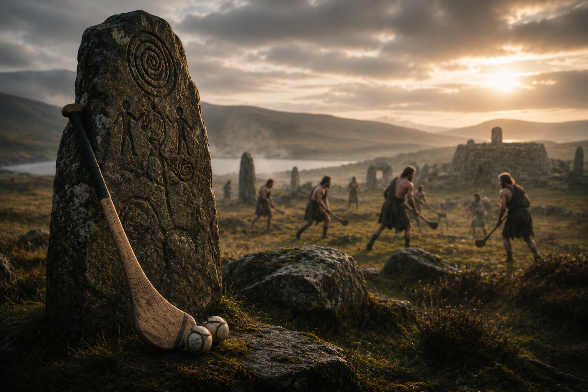
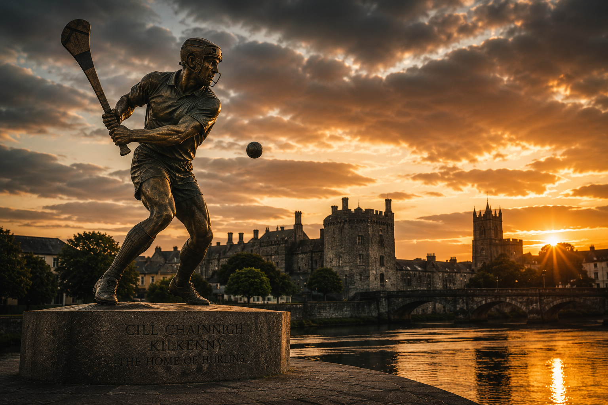
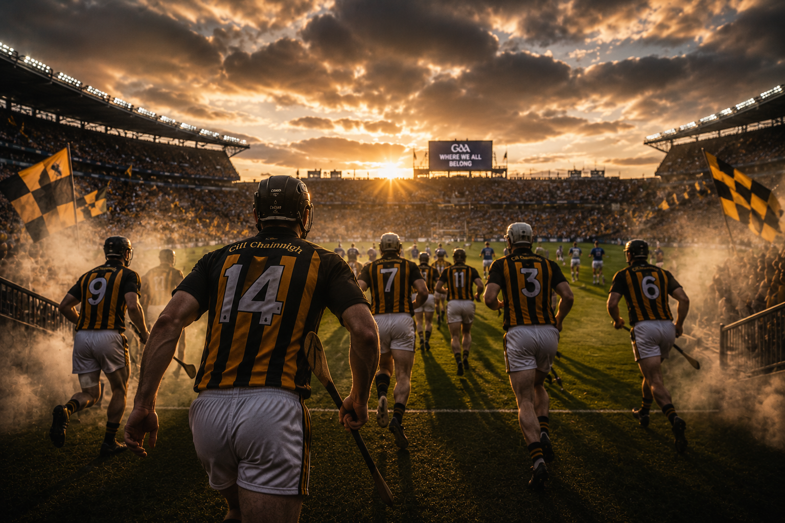
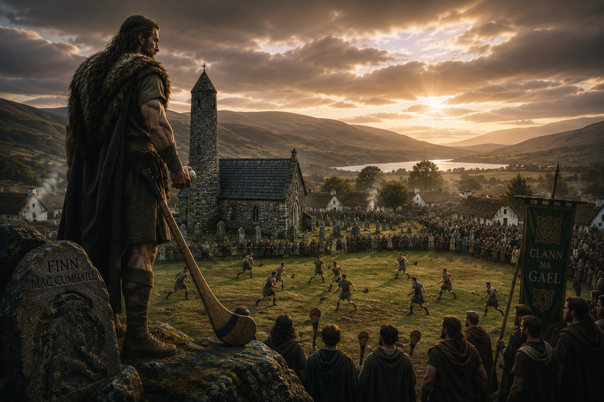
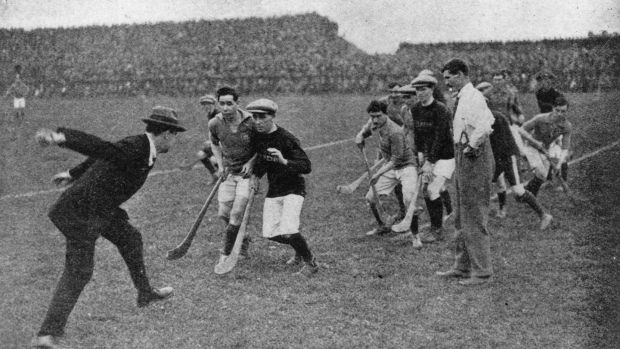
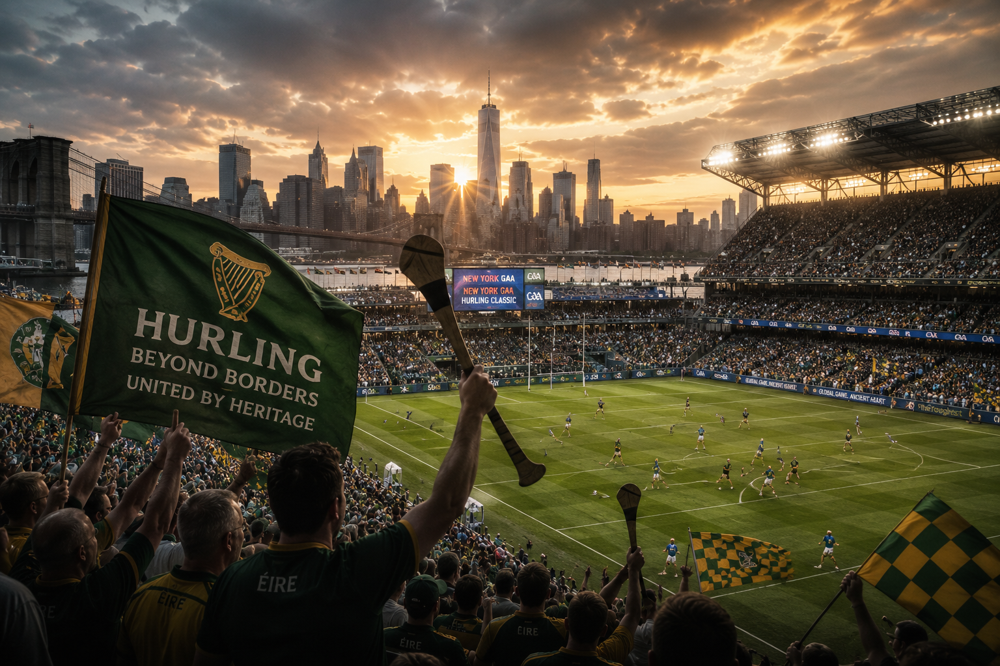

Mythic Age
Setanta & Cú Chulainn
Irish mythology tells of the young warrior Setanta, whose skill with a hurley became legendary. His story remains one of the earliest cultural links to the game.







